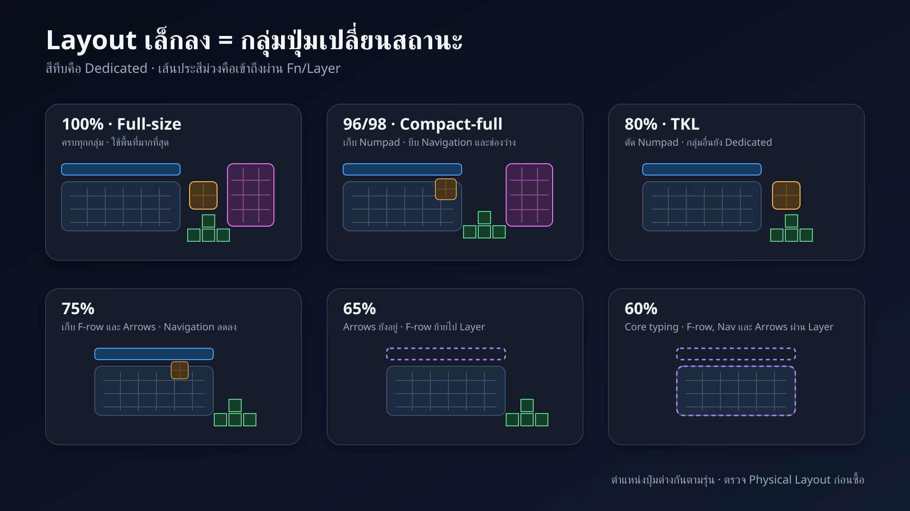
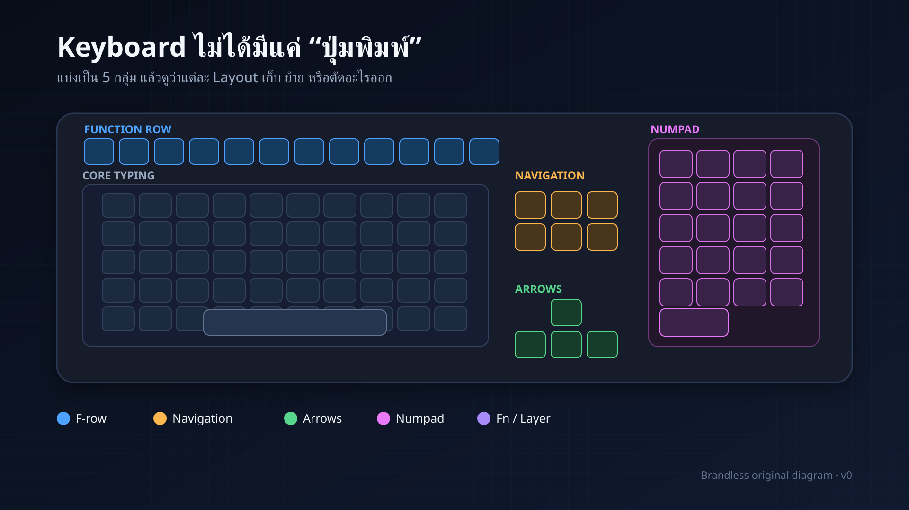
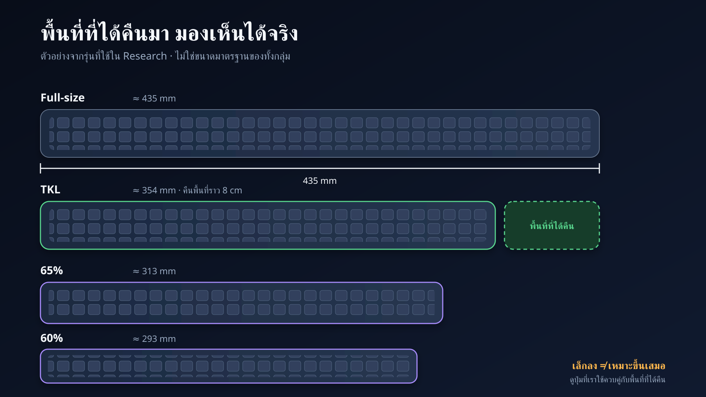
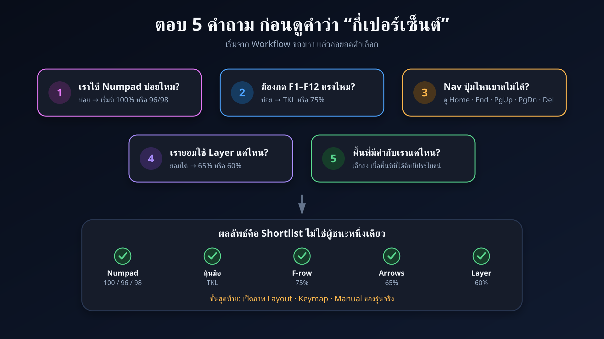

Preview นี้ย่อ storyboard 25 ฉากเป็น 10 visual beats และเล่นแบบเร่งเพื่อเช็ก narrative flow ไม่ใช่ตัวแทนเวลาจริงของ narration



Visual check
สีของแต่ละกลุ่มต้องเหมือนกันทุกเฟรม
สีของแต่ละกลุ่มต้องเหมือนกันทุกเฟรม
Rights check
ทุกภาพเป็น vector ที่วาดใหม่ ไม่มี logo หรือ screenshot สินค้า
ทุกภาพเป็น vector ที่วาดใหม่ ไม่มี logo หรือ screenshot สินค้า
Timing check
ต้องอัด read-through จริงก่อนล็อก duration รายฉาก
ต้องอัด read-through จริงก่อนล็อก duration รายฉาก